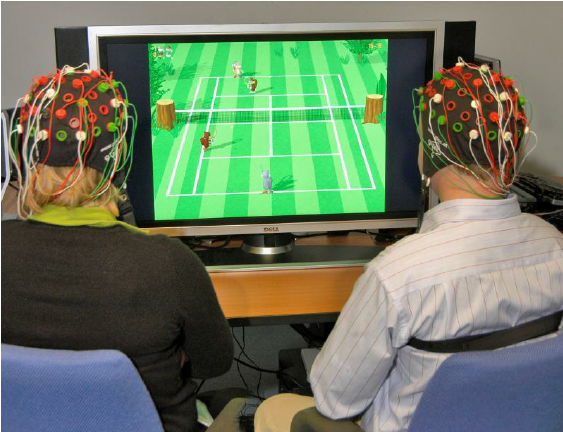

BCI in Gaming
The intersection of Brain-Computer Interface (BCI) technology and the gaming industry represents a frontier of innovation, poised to redefine the boundaries of interactive entertainment. BCI technology facilitates direct communication between the brain and an external device, enabling users to control software or hardware using brain signals alone. This groundbreaking approach offers unparalleled opportunities for immersion, engagement, and novel gameplay mechanics in video games.
{kind=link}

Emergent Technology Revolutionizing Interaction
BCI stands as one of the most exciting emergent technologies in the gaming sector. Unlike traditional input methods such as keyboards, mice, and gamepads, BCI enables players to interact with games through cognitive processes, including thoughts, focus, and even emotions. This technology not only promises to deliver more immersive gaming experiences but also opens up gaming to individuals with physical disabilities, offering new ways to play and interact.
Broadening Accessibility
BCI technology has the potential to make gaming more accessible to people with disabilities. By using brain signals for game control, BCI can provide an alternative for players who may find traditional controllers challenging to use. This inclusivity aligns with the broader industry trend towards making games accessible to a wider audience, ensuring that everyone can enjoy the rich experiences that video games offer.
Pioneering New Gameplay Mechanics
BCI enables developers to explore new gameplay mechanics and narratives that were previously unfeasible. Games could be designed with mechanics that rely on concentration, relaxation, or emotional responses, offering a new layer of interaction and strategy. This could lead to the development of games that not only entertain but also help players develop cognitive skills, manage stress, or explore emotional intelligence in profound ways.
The Future of Gaming
As BCI technology continues to evolve and become more accessible, its integration into gaming will likely expand. The future of BCI in gaming holds the promise of fully immersive virtual reality experiences, where players might navigate and interact with game worlds as naturally as they do in the physical world. Procedural Imagination aims to be at the forefront of this innovation, exploring the untapped potential of BCI to create games that captivate, engage, and inspire.
By integrating BCI technology, Procedural Imagination is not just developing games; it's pioneering a new realm of interactive entertainment that will redefine what it means to play. This commitment to innovation and accessibility reflects the core mission of Procedural Imagination: to push the boundaries of gaming and create experiences that resonate deeply with players across the globe.

Industry Overview
The gaming industry has experienced remarkable growth over the past decade, driven by advancements in technology, the proliferation of mobile devices, and the increasing social acceptance of gaming as a mainstream form of entertainment. With a compound annual growth rate (CAGR) that consistently outpaces many other entertainment sectors, gaming has become a dynamic and lucrative industry. This growth is supported by the continuous innovation in game development, the expansion of gaming demographics, and the rise of new platforms and business models, such as digital distribution, free-to-play games, and subscription services.
Parallel to the evolution of the gaming industry, the Brain-Computer Interface (BCI) sector has emerged as a cutting-edge field with significant potential across various applications, including healthcare, assistive technologies, and entertainment. In recent years, BCI technology has seen accelerated development, fueled by advancements in neuroscience, signal processing, and machine learning. The growing interest in BCI is also driven by the increasing accessibility of BCI devices, which are becoming more user-friendly and affordable, opening up new possibilities for consumer applications.
The intersection of BCI technology and gaming represents a nascent but rapidly growing niche. BCI offers a unique opportunity to enhance gaming experiences by introducing novel control schemes and immersive interactions, directly leveraging the gamer's cognitive and emotional states. This convergence has the potential to not only redefine user engagement in gaming but also to broaden the accessibility of games, catering to a wider range of abilities and preferences.